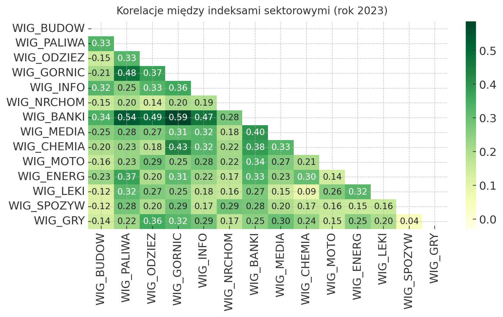
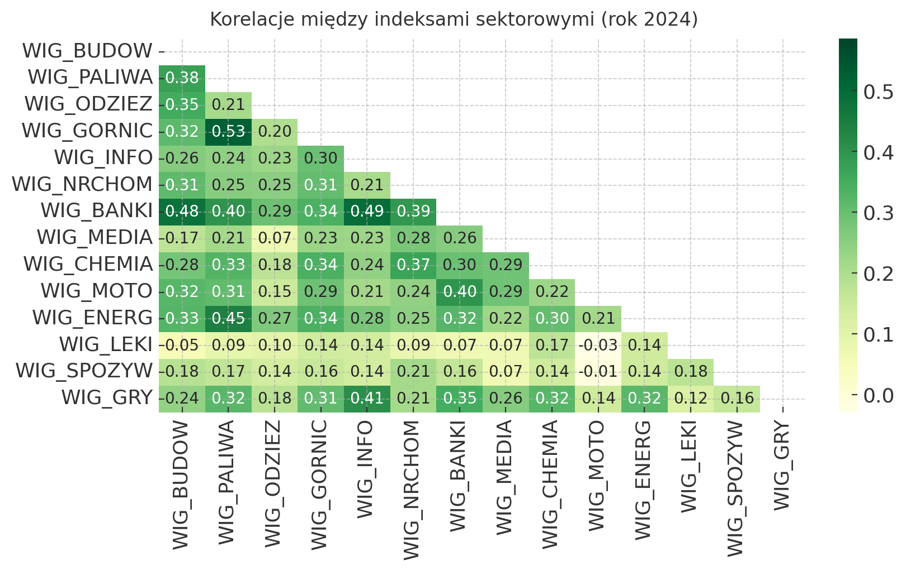
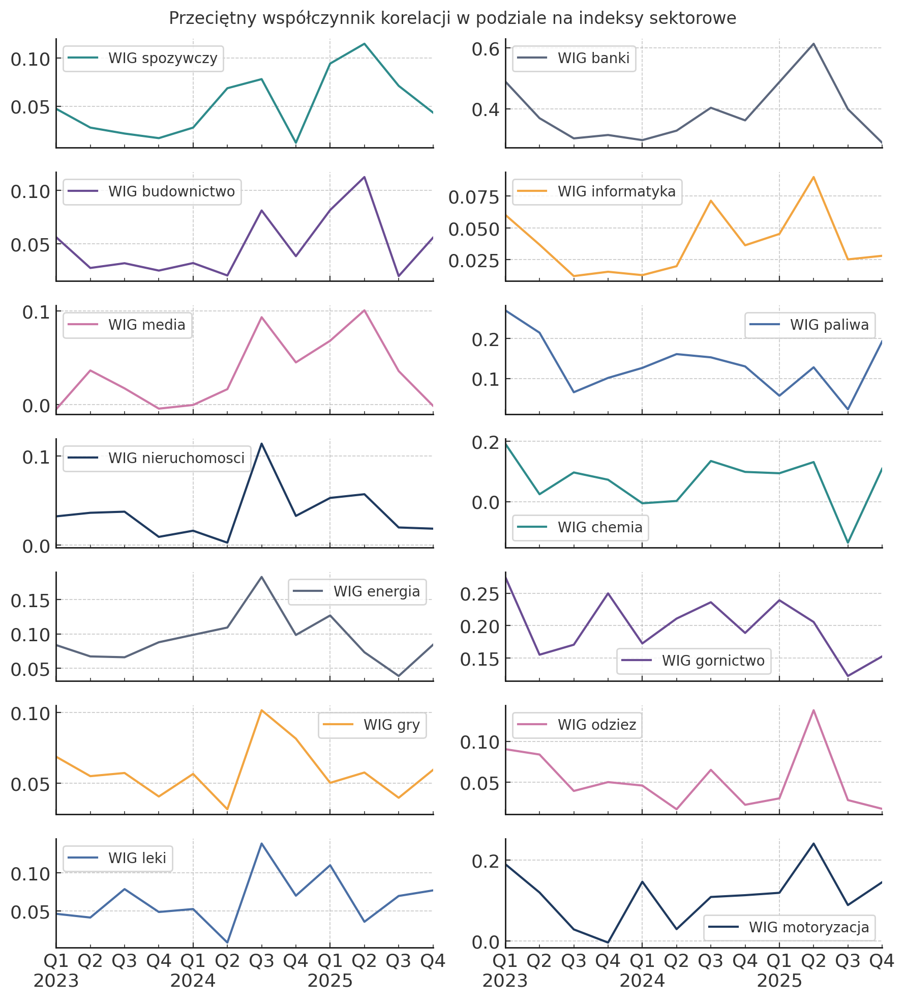
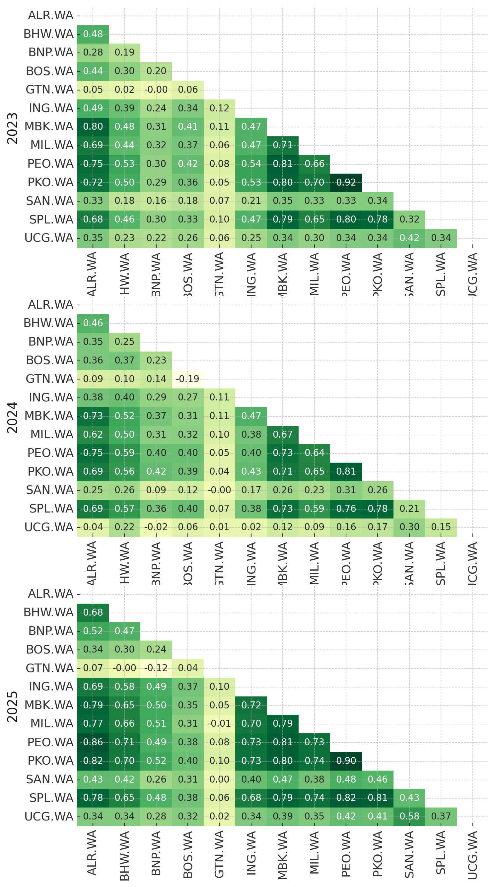
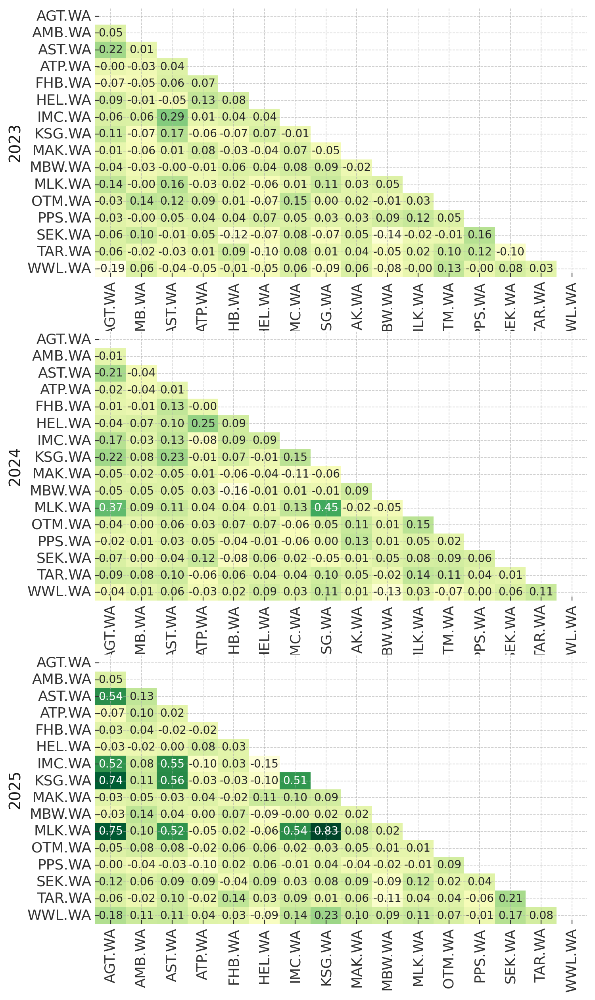
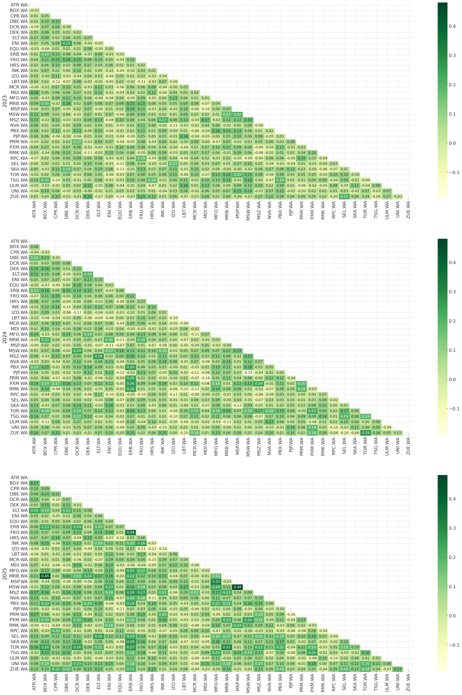
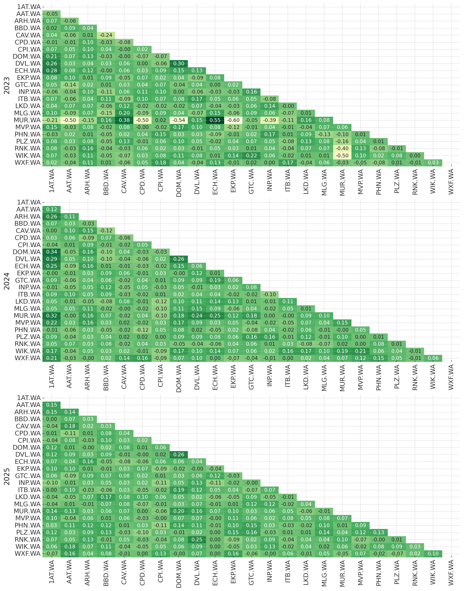
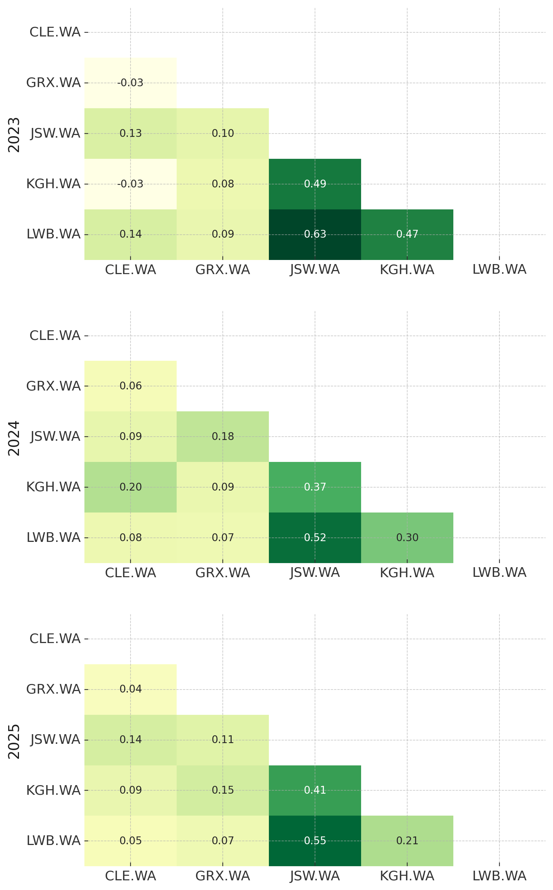
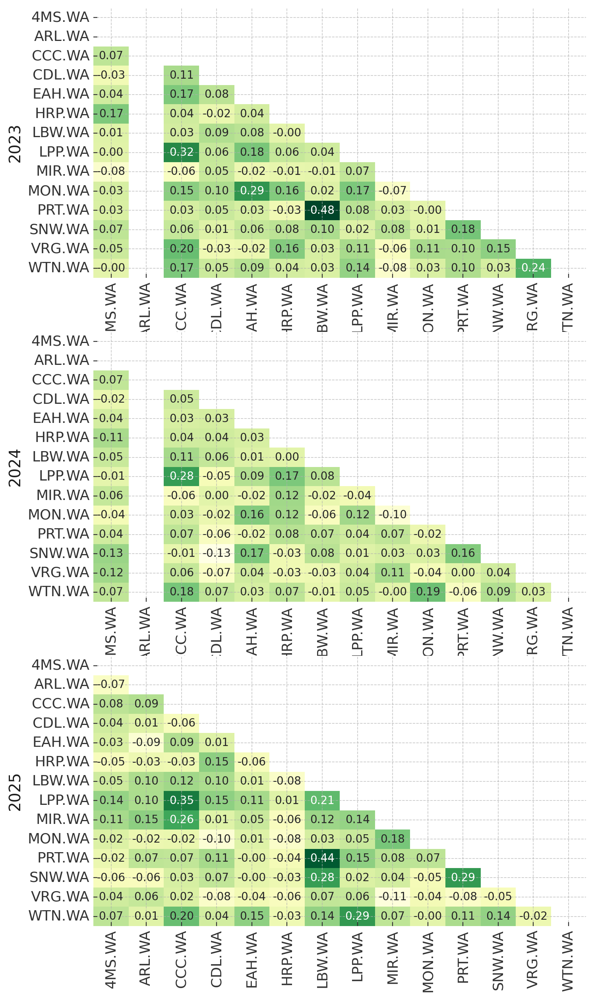
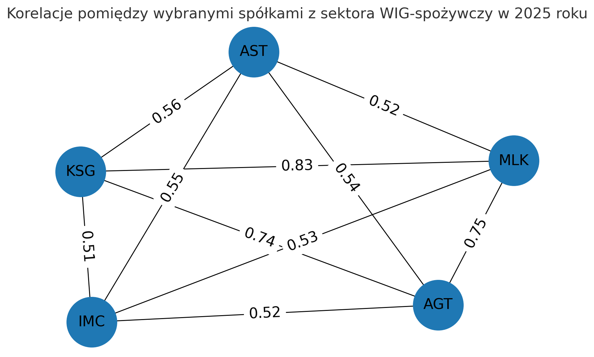

Dobór spółek do portfela najczęściej wiąże się z szeregiem analiz poprzedzających zakupy. Prowadząc tego typu badania warto pamiętać o występujących na rynku korelacjach. Uwzględnienie w swoich rozważaniach tego współczynnika pozwoli nam odfiltrować grupę podmiotów, których wyniki notowań są w dużej mierze sterowane czynnikami makro, a to co dzieje się wewnątrz organizacji stanowi jedynie dodatek. Dodatkowo możemy również uniknąć zaangażowania w spółkę, której kurs zachowuje się bliźniaczo podobnie do ceny waloru, który posiadamy już w portfelu.
W niniejszym wpisie prześledzę zestawienia korelacji sektorowych oraz wewnątrzsektorowych. Punktem wyjścia będą indeksy sektorowe prowadzone przez GPW, a moim celem będzie wypunktowanie wszystkich kluczowych zjawisk - największych korelacji (dodatnich oraz ujemnych) pomiędzy sektorami oraz wewnątrz nich. Pod uwagę wezmę także zmiany w czasie w okresie lat 2023 - 2025.
Analiza prowadzona będzie na danych dziennych, z wykorzystaniem korelacji Pearsona. Skład subindeksów sektorowych GPW aktualny na dzień 11 lutego 2026 roku, a źródłem danych rynkowych jest yahoo finance.
Na wstępie prezentuję wykres kwartalnych stóp zwrotu indeksu WIG. Kształt linii będzie niezwykle istotny na kolejnych etapach analizy.
Istnieje wiele podejść do wskaźnika Pearsona. Na potrzeby niniejszego wpisu zakładam natępującą interpretację wskaźnika korelacji:
- poniżej 0,30 -> słaba
- 0,31 - 0,50 -> umiarkowana
- 0,51 - 0,70 -> umiarkowanie silna
- 0,71 - 0,90 -> silna
- 0,91 - 1 -> bardzo silna
Korelacje międzysektorowe
W przypadku korelacji pomiędzy sektorami, w oczy rzucają się rosnące w czasie współczynniki. Swoje odzwierciedlenie ta statystyka ma przede wszystkim w udanym 2025 roku, gdzie względnie spora część spółek rosła. Poza tym zdecydowanie wyróżniają się powiązania sektora bankowego z niemal wszystkimi pozostałymi, a szczególnie ze stroną strategiczną (górnictwo/paliwa) oraz konsumencką (odzież). Co ważne, w tym przypadku korelacja okazuje się stabilna w czasie; najczęściej mieści się w przedziale korelacji umiarkowanej, z okresowymi odstępstwami na umiarkowanie silną i jeszcze rzadszymi przypadkami korelacji słabej (np. z WIG Gry w 2025 roku).
Wyróżniająco wysoka i stała w czasie jest także korelacja między indeksem spółek paliwowych i energetycznych. Oscyluje ona w przedziale 0,37 - 0,45.
W analizowanych okresach, powyżej wartości 0.50 znajduje się również korelacje między: - WIG Odzież a WIG Budownictwo w 2025 roku (co ciekawe w 2023 współczynnik wynosił jedynie 0,15) - WIG Górnictwo a WIG Paliwa w 2024 roku
Wspomniane wyżej odczyty nie mają swojej kontynuacji w czasie. Ogólnie rzecz biorąc, zaprezentowane wartości prowadzą do wniosku o dobrej dywersyfikacji sektorowej na GPW.



Korelacje sektorowe
Rozważania na temat korelacji w obrębie sektorów rozpocznę od analizy w czasie istniejących trendów.

Na wykresie powyżej przedstawione zostały przeciętne korelacje pomiędzy spółkami wchodzącymi w wylistowane indeksy. Kalkulacji dokonałem na danych dziennych, zgrupowanych w kwartały. Przyjmowanie w takim przypadku uśrednień nie jest rozwiązaniem idealnym, jednak powinno skutecznie pomóc w przedstawieniu zmian w czasie.
I tak jedyny sektor, w obrębie którego przeciętna korelacja utrzymuje się regularnie co najmniej jako umiarkowana to WIG-banki. Bazując na ostatnich trzech latach, w drugim kwartale 2025 roku wskaźnik ten przekroczył nawet 0.60. W tym miejscu warto jeszcze wspomnieć o WIG górnictwo, wewnątrz którego przeciętna korelacja regularnie osiąga poziomy 0.25. W przypadku pozostałych, rzadko kiedy odczyty wykraczają poza współczynnik na poziomie 0.2.
Nakładając na siebie całośc dotychczasowych rozważań, zauważalnym jest, że względnie duże skorelowanie wewnątrz sektora przekłada się później na wyższe współczynnika korelacji międzysektorowej. Stwierdzenie to tyczy się oczywiści bankowości oraz górnictwa.
Bardziej wprawione oko zauważy również, że kształty krzywych, z drobnymi odstępstwami pokrywają się ze sobą. W przypadku dużej cześci indeksów, zauważalny jest pierwszy wzrost przeciętnej korelacji w okolicach Q3 2024, następnie spadek w Q4 i kolejny lokalny peak przypadający na Q1 2025. Ta sekwencja pokrywa się ze stopami zwrotu szerokiego rynku: trzeci kwartał 2024 to spora przecena na poziomie ponad 5%, kolejny okres to wciąż spadek (lecz łagodniejszy), zaś pierwszy kwartał kolejnego roku zakończył się imponującym, 20% wzrostem. Oczywiście wciąż należy pamiętać o skali i tym, że większa część zaprezentowanych wykresów ma oś Y wyskalowaną do 0.2, jednakże analogiczne trendy widoczne w różnych sektorach udowadniają, że notowania podlegają ruchom wynikającym również z kwestii makro.











Co zatem słychać w obrębie poszczególnych indeksów? Jeżeli chodzi o bankowość, tutaj zdecydowanymi outsiderami są Getin, Grupo Santandar (nie mylić z Santander Bank Polska) oraz Unicredit. Pozostała grupa reprezentantów, znana głównie z WIG20 i mWIG40 potwierdza wysoką korelację, sięgająca nawet 0,92 jak w przypadku PKO i Pekao w 2023 roku.
Sektor spożywczy, po dwóch latach braku większych silnych korelacji, w 2025 w końcu takowe odnotował. W oczy rzucają się przede wszystkim połączenia przedstawione na wykresie:

Ważne: dane dla kolejnych dwóch indeksów, WIG Budownictwa i Informatyki mogą być niewidoczne w standardowym podglądzie. Wykresy w tych dwóch przypadkach sugeruję oglądać w powiększeniu, po otwarciu ich w nowych kartach.
Cztery z wymienionych spółek - AGROTON (AGT), ASTARTA (AST), IMCOMPANY (IMC) oraz KSGGAGRO łączy wspólny sektor “Produkcja rolna i rybołówstwo”. W przypadki MILKILAND (MLK), sytuacja jest nieco inna ponieważ firma sklasyfikowana jest jako podmiot z sektora żywnościowego.
W kolejnym z rozpatrywanych indeksów, w WIG-budownictwie na próżno szukać istotnych korelacji. W okresie analizowanych trzech lat dominują wskaźniki w granicach 0.10, co sugerowałoby bardzo duże zdywersyfikowanie indeksu. Dopiero dane za 2025 rok dostarczają nam pojedynczych silnych korelacji, na czele z parami Mostostal Zabrze i Mostostal Warszawa (współczynnik 0.48) oraz Mirbud i Budimiex (wsp. 0.45).
| Liczba spółek | |
|---|---|
| Sektor | |
| Materiały budowlane | 12 |
| Budownictwo przemysłowe | 9 |
| Budownictwo ogólne | 5 |
| Instalacje budowlane i telekomunikacyjne | 5 |
| Inżynieria lądowa i wodna | 3 |
| Pozostałe | 2 |
Warto dodać, iż względnemu brakowi korelacji pomiędzy spółkami zaliczanymi do WIG Budownictwo towarzyszy szeroki zakres indeksu - składa się on z aż 36 spółek, które według klasyfikacji sektorowej wg GPW Benchmark przynależą do 6 różnych sektorów.
Podobnie ma się sytuacja w drugim największym Indeksie - WIG Informatyka. Pomimo tego, że 18 z 28 spółek indeksu znajduje się oprogramowaniem, w badanym okresie najwyższą korelację odnotowano przy parze XPlus i OPTeam, jednak wyniosła ona jedynie 0.31.
Kolejne opisane heatmapami indeksy zdecydowanie nie przynoszą rewolucyjnych wiadomości, a współczynniki korelacji tam wymienione oscylują w niskich zakresach. Wspomnieć jednak warto tutaj o sektorze paliwowym i o malejącej korelacji pomiędzy PKN Orlen a Unimot. Choć już w 2023 roku współczynnik wynosił tylko 0.26, kolejne odczyty to już kolejno 0.18 i 0.12.
Dodatkowo uwagę przyciąga z pewnością nietypowe zachowanie Murapolu w indeksie WIG Nieruchomości za 2023 rok, jednak wynik ten należy zignorować - spółka na giełdzie zadebiutowała dopiero 15 grudnia 2023.
Następnie przeskakujemy do WIG Energia. Tutaj całościowo indeks nie jest mocno skorelowany ze sobą, obejmuje bowiem przedstawicieli różnych obszarów tej branży - od operatorów, przez spółki dystrybucyjne aż do producentów infrastruktury. Co jednak ważne, trzech największych graczy pozostaje w silnej korelacji - mowa tu o PGE, Tauronie i Enei. W zależności od okresu oraz pary, współczynnik oscyluje pomiędzy 0.60 a 0.84, co oczywiście jest efektem analogicznej charakterystyki działalności oraz istotnego udziału Skarbu Państwa w akcjonariacie. Tyczy to się także połączenia pomiędzy JSW a Lubelskim Węglem Bogdanką (i w nieco mniejszy stopniu relacji KGHM z wymienionymi). Na zakończenie rozważać warto także wspomnieć o relacji pomiędzy spółkami Lubawa i Protektor. Obie należą do indeksu WIG-odzież, jednak zajmują się przede wszystkim sektorem odzieży ochronnej/militarnej. Z pominięciem roku 2024, współczynnik korelacji wynosi 0.44-0.48.